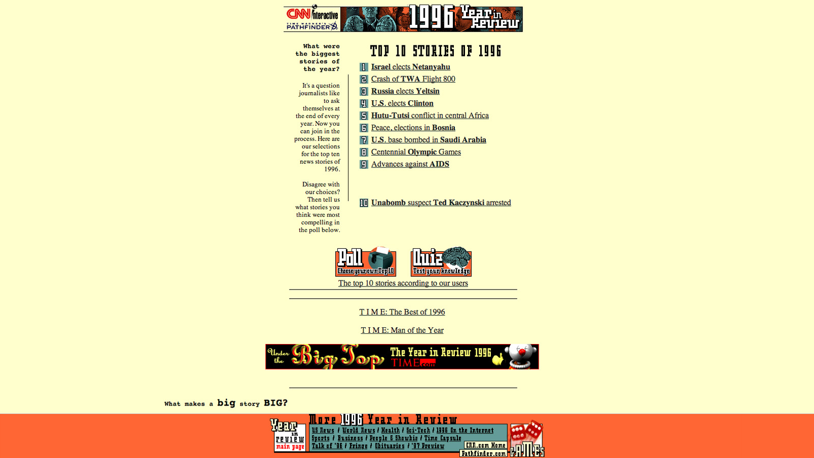
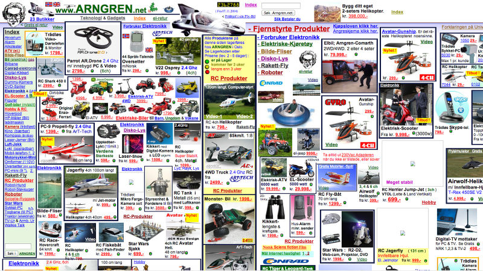
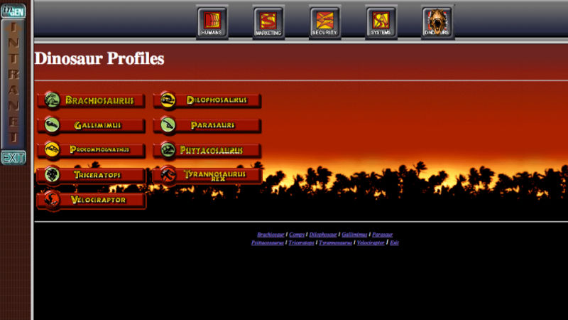
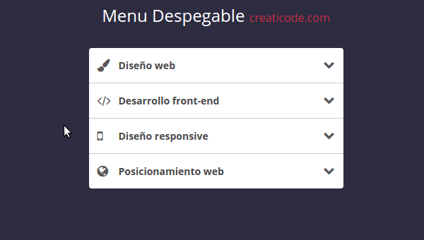
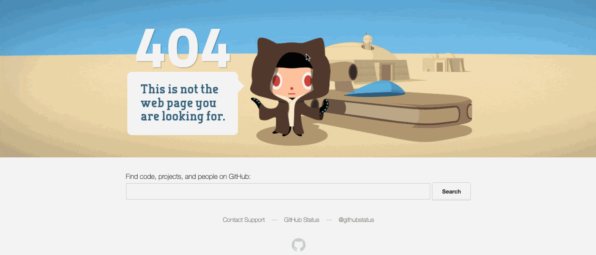
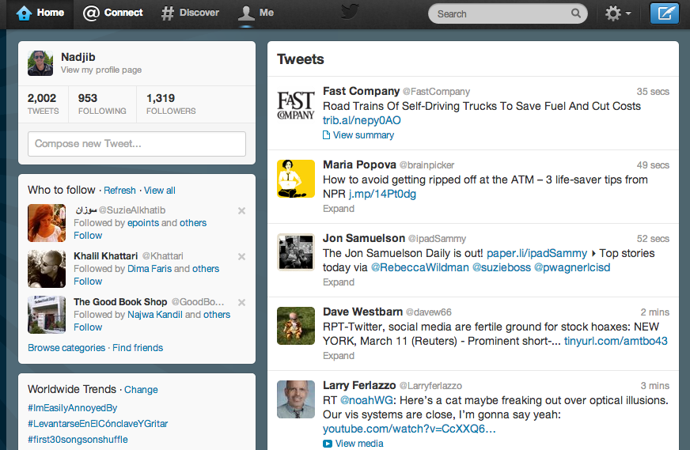
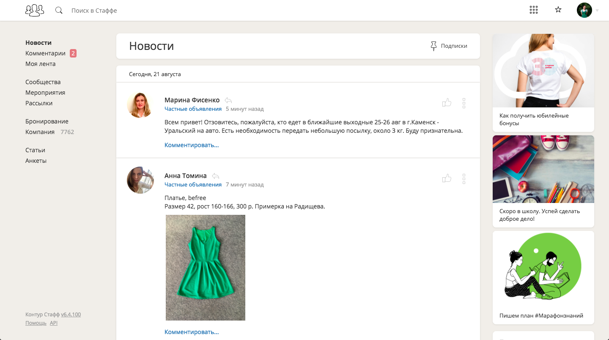
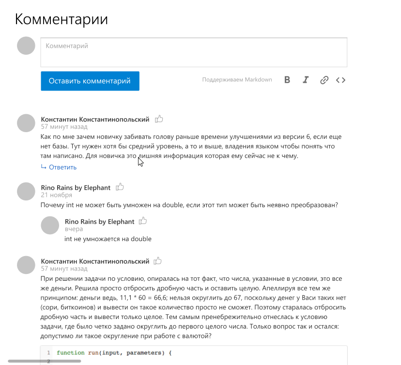
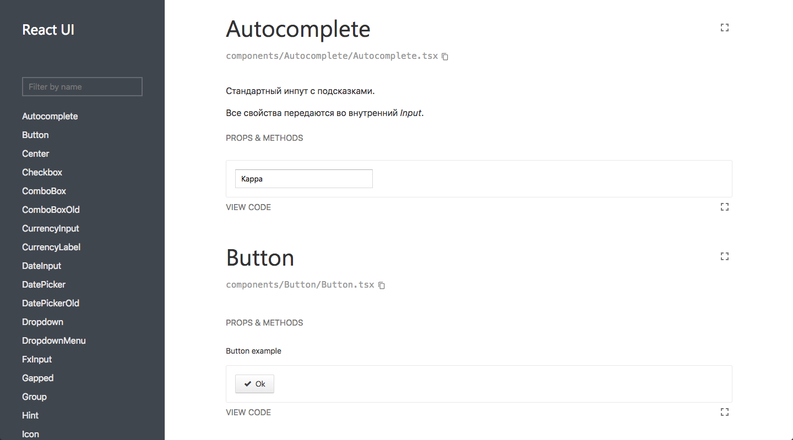
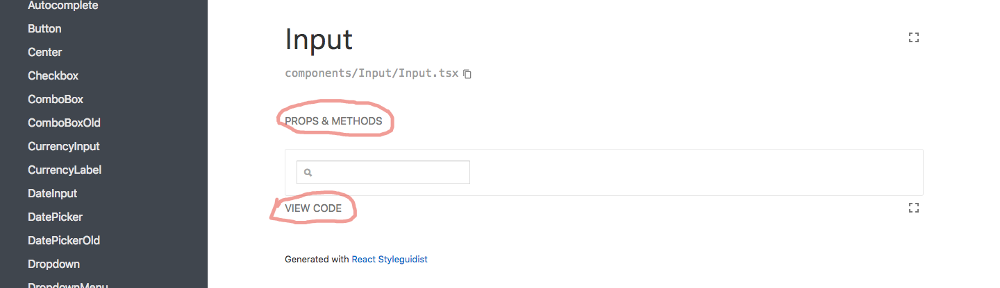

<!doctype html>
<html>
<head>
    <meta charset="utf-8">
    <meta name="viewport" content="width=device-width, initial-scale=1.0, maximum-scale=1.0, user-scalable=no">
    <link rel="stylesheet" href="reveal/css/reveal.css">
    <link rel="stylesheet" href="reveal/css/theme/kontur-light.css" id="theme">
    <!-- Theme used for syntax highlighting of code -->
    <link rel="stylesheet" href="reveal/css/highlight/idea-for-light.css">
    <link rel="stylesheet" href="reveal/css/highlight/darkula-for-dark.css">

    <script defer src="reveal/js/head.min.js"></script>
    <script defer src="reveal/js/reveal.js"></script>
    <script defer src="reveal/initialize.js"></script>
    <script defer src="reveal/js/d3.min.js"></script>
    <style>
		.img-center {
            position: absolute;
            left: 50%;
            top: 50%;
            transform: translate(-50%, -20%);
        }
        .img-center-wrapper {
            height: 75vh;
            min-width: 800px;
            position: absolute;
            left: 50%;
            top: 50%;
            transform: translate(-50%, -20%);
            background-color: white;
            text-align: center;
        }
    </style>
    <title>React</title>
</head>
<body>

<div class="reveal">
<div class="slides">

<section data-markdown><script type="text/template">

# React

<p style="text-align: center;">
    <a href="https://github.com/Aminopyridin/react-for-designers">
        https://github.com/Aminopyridin/react-for-designers</a>
</p>

</script></section>

<section data-markdown><script type="text/template">

## Цели и задачи занятия

- Попробовать поверстать простые штуки на React
- Создавать компоненты на React
- Использовать общие контролы из библиотеки компонентов
- Научиться отвечать на вопрос: зачем эти знания проектировщикам? Если получится, то:
    - будем делать курс верстки
    - проведем более подробный курс Реакта для всех желающих: с динамическим состоянием и модалками

</script></section>

<section data-markdown><script type="text/template">

## Сначала самое ~~долгое~~ важное

Скачиваем все необходимые пакеты Node.js:

```cmd
cd tasks
npm install
```

Затем запусти dev-сервер, чтобы видеть результат:
```cmd
npm run start
```

Посмотреть можно будет на <a href="http://localhost:8080">http://localhost:8080</a>

Перестроение автоматическое, пока работает dev-сервер

</script></section>

<section data-markdown><script type="text/template">

## Откуда появился и зачем нужен React

***

### Конец 90-х — начало 2000-х.

<div style="min-height: 450px;">
    
    
    
    <video autoplay="autoplay" loop="loop" controls width="800" height="450" class="img-center fragment"
           data-fragment-index="3">
        <source src="assets/site4.mp4">
    </video>
</div>

***

### Интернет read-only

- Документы
- Internet Explorer
- Файловая структура: все в HTML-файле
- Структура сайтов:

```
HTML ======================================
CSS  ===
```


***

### Web 2.0. Появление jQuery

<div style="min-height: 450px;">
    <div class="img-center-wrapper">
        
    </div>
    <div class="img-center-wrapper fragment">
        
    </div>
    <div class="img-center-wrapper fragment">
        
    </div>
    <div class="img-center-wrapper fragment">
        
    </div>
</div>

***

### Web 2.0

- Интернет-магазины, лендинги, блоги...
- «Зоопарк» браузеров
- Файловая структура: отдельно файлы стилей, разметки и js
- Структура сайтов:

```
HTML =====================
CSS  =========
JS   ==
```


***

### Эпоха приложений

<div style="min-height: 450px;">
    <div class="img-center-wrapper">
        
    </div>
    <div class="img-center-wrapper fragment">
        
    </div>
    <div class="img-center-wrapper fragment">
        
    </div>
</div>

***

### Эпоха приложений 

- SPA: одностраничные приложения
- Много логики и информации
- Браузеры работают по стандартам
- Структура сайтов:

```
HTML =====
CSS  =======
JS   ===========
```

***

### Проблема: HTML — плохой язык программирования 😢

Невозможно:
- переиспользование
- разбиение по файлам
- условия

***

### Решение: JS — хороший язык программирования 👍

Возможно:
- переиспользование: выделение функций
- разбиение по файлам
- циклы и условия

***

### Проблема: разделения на JS, HTML и CSS недостаточно 🧐

Хранить логику отдельно от всего остального становится сложно:
- ее слишком много
- непонятно как она взаимовсязана
- далеко друг от друга находится визуальное представление и то, как оно работает


***

### Решение: компонентный подход 😍

```js
HTML+CSS+JS   |   HTML+CSS+JS   |   HTML+CSS+JS
```

- Каждый компонент = HTML + JS + CSS
- Можно комбинировать и переиспользовать!
- Стили изолированы, в отличие от обычного CSS

***

## Тут на сцене и появляется Реакт 💃

</script></section>

<section data-markdown><script type="text/template">

## JSX — главное новшество

***

### JSX = HTML + JS 😇

```js
function ButtonWithHandle() {
    function handleClick() {
        ...
    }

    return <input type="button" onClick={handleClick}/>
}
```

***

### Отличия верстки на JSX

Верстка на JSX похожа на HTML, но есть отличия

***

### Элементы

React-обертки для встроенного в HTML

**HTML**
<pre><code class="lang-html hljs">&lt;div&gt;</code></pre>

**JSX**
<pre><code class="lang-html hljs">&lt;div&gt;</code></pre>

Элементы именуются с маленькой буквы

***

### Тэги должны быть закрытыми

Либо закрывающий тэг
<pre><code class="lang-html hljs">&lt;div&gt;Hello&lt;/div&gt;</code></pre>

Либо слэш в конце
<pre><code class="lang-html hljs">&lt;br /&gt;</code></pre>

***

### Именование свойств в camelCase


**HTML**
<pre><code class="lang-html hljs">&lt;input type="text" tabindex="0" onclick="alert()"&gt;</code></pre>

**JSX**
<pre><code class="lang-html hljs">&lt;input type="text" tabIndex="0" onClick="alert()" /&gt;</code></pre>

***

### Два способа передачи значения атрибута

Через `""` как в HTML

<pre><code class="lang-html hljs">&lt;input type="text" tabIndex="0" /&gt;</code></pre>

Через `{}` с возможностью вставки произвольного JS

<pre><code class="lang-html hljs">&lt;input type={"text"} tabIndex={a + 5} onClick={alert()} /&gt;</code></pre>

В этом случае в IDE работает подсветка и рефакторинги

***

### Вставка JS-значений в верстку

<pre><code class="lang-html hljs">&lt;div&gt;{Math.round(1000/3)}&lt;/div&gt;</code></pre>

***

### class → className

**HTML**
<pre><code class="lang-html hljs">&lt;div class="red"&gt;&lt;/div&gt;</code></pre>

**JSX**
<pre><code class="lang-html hljs">&lt;div className="red"&gt;&lt;/div&gt;</code></pre>

class — слишком популярное слово

***

### Вставка React на страницу

<pre><code class="lang-html hljs">&lt;div id="app"&gt;&lt;/div&gt;</code></pre>

```js
ReactDom.render(
    <div className="fromReact"></div>,
    document.getElementById('app')
);
```

- Можно вставить в любое место, даже в легаси
- Можно несколько раз

***

### Задача: базовая верстка

Описание задачи в файле `tasks/task1.md`.

</script></section>

<section data-markdown><script type="text/template">

## Компоненты

***

### Что такое Компонент

- изолированный (в идеале и самоценный) кусок разметки
- можно многократно подключать в приложении
- можно настраивать его поведение извне

***

### Что может быть компонентом?



***

### Как создать компонент

```js
class MyComponent extends React.Component {
    render () {
        return (
            <button disabled>Hello, I'm Button!</button>
        )
    }
}
```

***

### Как пользоваться компонентом?

```js
<div>
    <h1>Title</h1>
    <MyComponent />
<div>
```

***

### Storybook

Инструмент для
- разработки компонентов
- возможности узнать «а что уже есть?»
- регрессионного тестирования

***

### Запуск Storybook

Открой в терминале (можно в том же, можно в новом) директорию `tasks`
Выполни команду `npm run storybook`
Открой в браузере [http://localhost:9001/](http://localhost:9001/)

*** 

### Написание истории для Storybook

Откроем файл `tasks/src/components/Example/Example.story.js`

***

### Задача: создаем компонент

Задача описана в файле `task2.md`

</script></section>

<section data-markdown><script type="text/template">

## Props: разные данные одинаковым компонентам

***

### Как передавать компоненту разные данные

```js
<MyComponent title="Заголовок!" count={10} isChecked />
```

***

### Как пользоваться данными в компоненте

```js
class MyComponent extends React.Component {
    render () {
        return (
            <div>
                <h1>{this.props.title}</h1>
                Прочитало: {this.props.count} человек
                <input type="checkbox" checked={this.props.isChecked} />
            </div>
        )
    }
}
```

***

### Как создать несколько story

```js
storiesOf('Example', module)
  .add('default', () => (
    <Example />
  ))
  .add('withTitle', () => (
    <Example title="Заголовок" />
  )); 
```

***

### Задача: задаем пропсы

Задача описана в файле `task3.md`

</script></section>

<section data-markdown><script type="text/template">

## Добавляем react-ui

***

### Документация react-ui


<a href="http://tech.skbkontur.ru/react-ui/"></a>

***

### Описание компонентов

<a href="http://tech.skbkontur.ru/react-ui/#/Button" target="_blank">http://tech.skbkontur.ru/react-ui/#/Button</a>




***

### Использование компонентов react-ui

1. Импортировать в файл нужный компонент:
```js
import Button from '@skbkontur/react-ui/Button'
```
2. Воспользоваться им в своей разметке:
```js
<div>
    <Button use="primary" size="large">Сохранить</Button>
</div>
```

***

### Обновление Example.js

Давайте обновим input и button в `Example.js`.

***

### Задание: использование react-ui

Задача описана в файле `task4.md`

</script></section>

<section data-markdown><script type="text/template">

## Обсуждение

***

### Что мы попробовали

- верстать в окружении Реакта
- создавать свои компоненты
- смотреть компоненты в storybook
- задавать компонентам разные параметры
- подключать чужие компоненты (react-ui)

***

### Что осталось за бортом

- как делать разную верстку, в зависимости от разных параметров
- как делать много-много одинаковых частей в разметке, не копируя руками
- как делать динамические компоненты («нажимаешь сюда, появляется вот это»)
- как показывать модальные окна =(

***

### Ваши впечатления

- Сложно ли было? Или можно было сложнее?
- Зачем вам эти знания? Нужны ли они остальным?
- Нужен ли углубленный курс?


</script></section>


</div>
</div>
</body>
</html>
